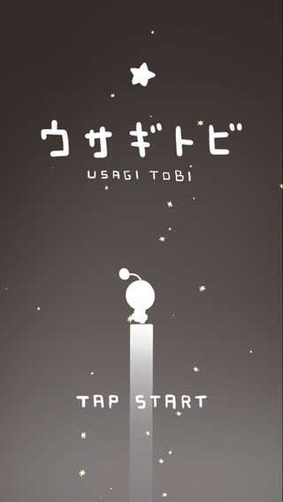
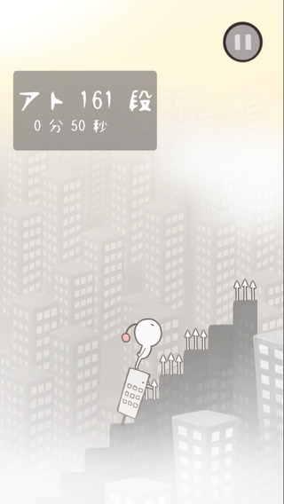
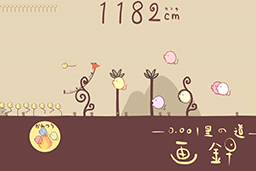

ゲーム作品
ここで紹介する作品は、名古屋工学院専門学校ゲームCG 分野の学生が制作したものです。
Google Playより無料でダウンロードして遊ぶことができますので、是非お試しください。
「FACTORIAN」
※ 日本ゲーム大賞2016 アマチュア部門コンテスト【優秀賞】受賞作品


※ 4つのチームに分かれて戦う電子ボードゲーム
※ 対人プレイがおすすめ！！
※日本ゲーム大賞2016 アマチュア部門について
応募総数 329作品
２次審査通過 85作品（ビデオ審査通過数）
最終審査 17作品（試遊審査通過数）
受賞 10作品（ノミネート数）
「脱獄パラソル」
※ 愛知デジタルコンテンツコンテストアプリ部門 【グランプリ】受賞作品


※ デバイスを傾けて左右移動！タップで高速直下！
※ たったこれだけのシンプルアクション。
「ウサギトビ」
※ CCS2015 クリプトンフューチャーメディア賞 受賞作品
※ 愛知デジタルコンテンツコンテストアプリ部門 ノミネート作品
 

※ 指一本で遊べるカジュアルゲーム
※ ウサギトビ王に、キミはなる！！
「RoundTrip」
※ CCS2015 最優秀賞 受賞作品
※ CCS2015 Microsoft賞 受賞作品
※ 愛知デジタルコンテンツコンテストアプリ部門 ノミネート作品

■遊び方
快盗の行く先にアイテムをドラッグ＆ドロップするだけの簡単プレイ！
３つのアイテムを使い分け、配置を決めて組み合わせながら、快盗を宝石へと導きましょう！
「プリンセスレスキュー」
ゲームのCGを学んでいる学生が制作した作品です。
乙女ゲーが好きな人に是非プレーしてもらいたいと思います。
「画針 -0.001里の道-」
※ 日本ゲーム大賞2013 アマチュア部門コンテスト 【佳作】受賞作品
※ 愛知デジタルコンテンツコンテストアプリ部門 【グランプリ】受賞作品


※ 押して、離して、タッチする
※ 簡単操作のアクションゲーム。

※日本ゲーム大賞2013アマチュア部門について
応募総数 282作品
２次審査通過 62作品（ビデオ審査通過数）
最終審査 17作品（試遊審査通過数）
受賞 10作品（ノミネート数）
TGS2013展示作品 一筆斬り
※ 日本ゲーム大賞2013 アマチュア部門コンテスト 試遊審査通過作品！！


カンタン操作で爽快アクション！
「一筆書きパズル」に「斬撃アクション」を取り入れたゲームです。
ただ直感的にパズルを解いてゆくだけで、爽快な斬撃を繰り出す事が出来ます。
「ぱくぱくもぐもぐ」
なぞって！繋いで！お菓子を作る！？
常に腹ペコなジョセフィーヌに、どんどんお菓子を食べさせよう！
一度に沢山お菓子を作れば、コンボが発生！
あなたはどれだけジョセフィを満足させられる？
ダウンロードは
こちらから
「キミハヒトリジャナイ」
※ タッチ操作の簡単シューティング。
※ マルチタッチでミサイル発射。
「サムライカンプ」
合計ダウンロード数が一番多い作品です。
平成２４年４月に入学した学生が、わずか６ヶ月プログラムを勉強した後、１人で２ヶ月かけて作成した作品になります。
まだまだ改良点のある作品ですが、和テイストの趣きのある作品に仕上がっています。
ダウンロードは
こちらから
「BATTLE SHIP」
有効インストール数が１番多い作品です。
平成２４年４月に入学した学生が、わずか６ヶ月プログラムを勉強した後、１人で２ヶ月かけて作成した作品になります。
擬似３Dとジャイロを使って手軽に遊べる作品に仕上がっています。
ダウンロードは
こちらから
「KREISEL」

有効インストール数／合計ダウンロード数の数値が１番高い作品です。
スコアアタックアプリですので、スキマ時間についついプレイしたくなる作品です。
「時計塔のアーティザン」

※ 動いている歯車から動力をつないで、止まっている歯車を動かすパズルゲームです。
※ 簡単操作で手軽にゲームを楽しむことができます。